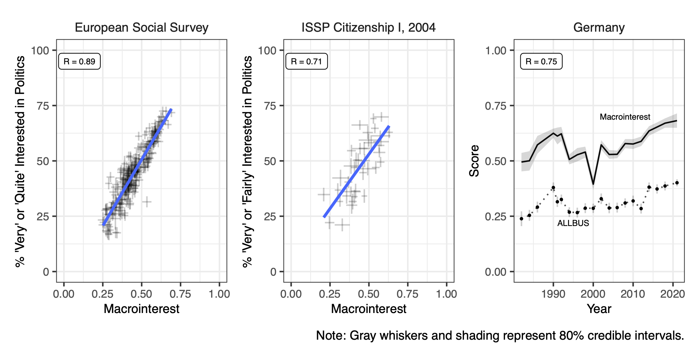
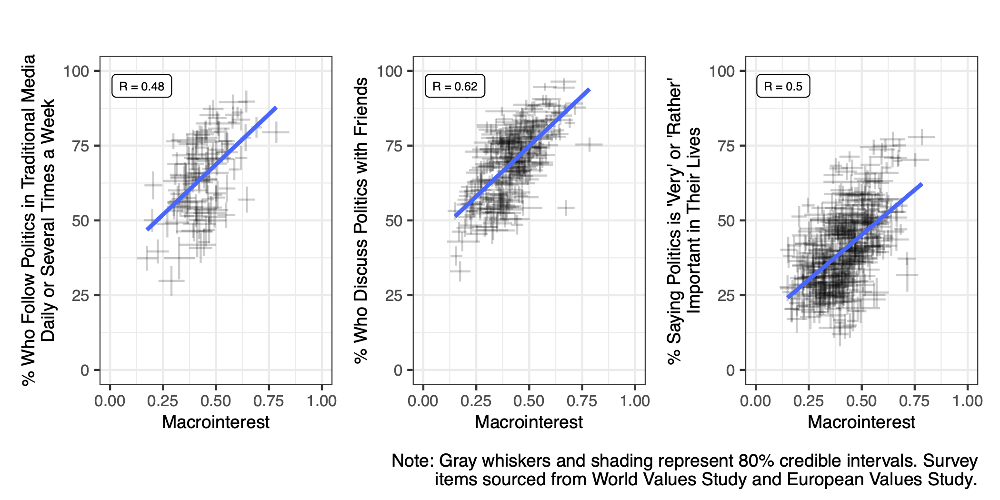
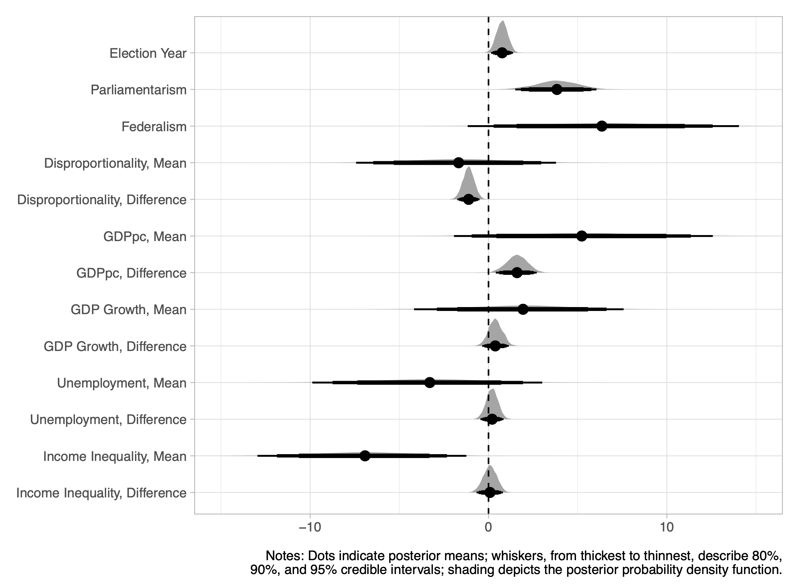

Macrointerest Across Countries
![]()
Abstract
The extent to which the public takes an interest in politics has long been argued to be foundational to democracy, but the want of appropriate data has prevented cross- national and longitudinal analysis. This letter takes advantage of recent advances in latent-variable modeling of aggregate survey responses and a comprehensive collection of survey data to generate dynamic comparative estimates of macrointerest, that is, aggregate political interest, for over a hundred countries over the past four decades. These macrointerest scores are validated with other aggregate measures of political interest and of other types of political engagement. A cross-national and longitudinal analysis of macrointerest in advanced democracies reveals that along with election campaigns and inclusive institutions, it is good times, not bad, that spur publics to greater interest in politics.
Important figures



BibTeX citation
@misc{Solt2023,
author={Hu, Yue and Solt, Frederick},
title={Macrointerest Across Countries},
publisher={SocArXiv},
year={2023},
month={May},
url={osf.io/preprints/socarxiv/nkgdy/},
doi={10.31235/osf.io/nkgdy}
}